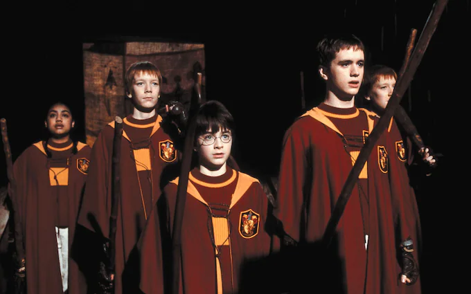
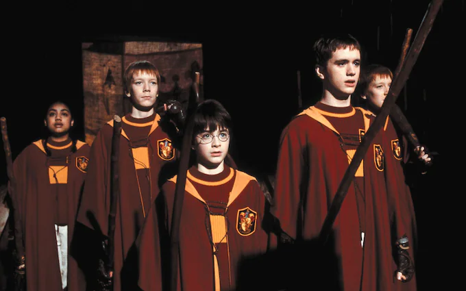

Quidditch was one of the most exhilarating parts of my time at Hogwarts. As a Gryffindor, I was fortunate enough to make the house team and play in many exciting matches against other houses.
I played as the Seeker, which meant my job was to catch the elusive Golden Snitch before the other team's Seeker could get to it. It was a high-pressure position, but I loved the challenge and the rush of adrenaline that came with it.
One of my most memorable Quidditch matches was during my third year at Hogwarts. We were playing against Hufflepuff, and I was up against their Seeker, Cedric Diggory. It was a close game, and we were both desperately trying to catch the Snitch.
In the end, I managed to outmaneuver Cedric and caught the Snitch, securing our victory. It was an incredible feeling, knowing that I had helped my team win and feeling the cheers of the Gryffindor supporters.
But Quidditch wasn't always easy. During my fifth year, I was banned from playing for several matches due to a disagreement with the Ministry of Magic. It was frustrating not being able to play and help my team, but I knew that standing up for what I believed in was more important.
Despite the challenges, I loved being a part of the Gryffindor Quidditch team and representing my house on the pitch. And I'll never forget the friendships and memories I made during those matches - they were some of the best times of my life.
 
